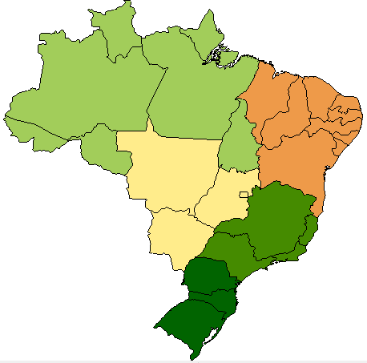
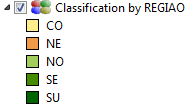
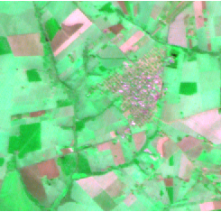
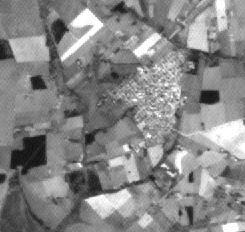
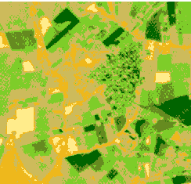
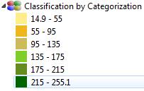
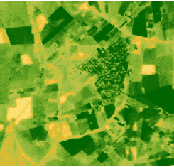
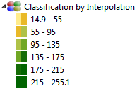

The Classification can be applied in both vector and raster data. The basic principle of this type of classification is grouping
the data following the logic of some selected method.
It is
accessible through:
Layer
Explorer > Right Click over a
Layer-name >
Classification...
Unique Values: It groups the values using the unique value
algorithm.
Equal Steps: The entire range of values (max - min) is
divided equally into however many categories have been defined. It
groups the values defined by a range of an attribute using the equal steps algorithm.
Quantil: This method classifies data into a certain number of
categories with an equal number of units in each category. It
groups the values defined by a range of a attribute
using the quantil algorithm.)
Standard Deviation: It groups the values defined by a range of a
attribute using the standard deviation algorithm.
The parameters necessary to execute the Classification are grouped in frames at the interface. See the details bellow.
Frame 1 - Import Layer Grouping - Check this box to eventually use the parameters used in other layer
Layer - select the layer from where to import the parameters of classification. It might not be possible to import any of them.
Press Import
Frame 2 - Classification Parameters
Type - Select the method of classification (unique value, equal steps, quantil).
Attribute - Select the attribute to be used in the classification. The
attributes listed may vary depending on selected method of
classification.
Slices - Set the number of slices to be created in the classification.
Precision - Sets the precision value.
Standard Deviation -
Color Bar - Set the color ramp as explained here.
Use Schema - ???
Catalog - ??
Group - ??
Schema - ??
Press Apply to show the Classification frame with the slices identified by Symbol, Title, Value, Count.
Press OK to generate the Classification by Grouping with these parameters or change the parameters and apply again.
The result
of classification by region over Brazil states, using Unique Value type, is showed bellow.

Raster Classification
The
available methods in TerraLib
are:
Categorize: The transformation of continuous values to distinct
values.
Interpolation: The transformation of continuous values to a
number of values.
The parameters necessary to execute the Classification are grouped in frames at the interface. See the details bellow.
Frame 1 - Import Layer Grouping - Check this box to eventually choose the same parameters used in other layer
Layer - select the layer from where to import the parameters of classification. It might not be possible to import any of them.
Press Import.
Frame 2 - Classification Parameters
Band - Select which band will be classified.
Minimum Value - Set the minimum value (the suggested value
is get from the selected band).
Maximum Value - Set the maximum value (the suggested value is get from the selected band).
Transformation - Select the method for classification (categorize or interpolation).
Slices - Set the number of slices to be created in the classification.
Type - Defines how data is classified.
Color Bar - Set the color ramp as explained here. ??
Use Schema - ???
Catalog - ??
Group - ??
Schema - ??
Press Apply to show the Color Map with the slices identified by Value, Color and Label.
Press OK to generate the Classification with these parameters or change the parameters and apply again.
The figures bellow show a original image in color composition, band-0 and the results of classification.
RGB-012
BAND-0
 
The result
of Classification using Categorize method with default parameters and 6 slices.

The result
of Classification using Interpolation method with default parameters and 6 slices.
